By themselves, LLM-based apps, like simple chatbots, can generate responses and answer questions. Next, we want them to make plans and carry them out. We want them to book a flight, not just list available flights, or update a project tracker, not just list the changes that need to be made. To equip AI apps with active abilities, we add AI agents to the system. The agent is not a new concept in machine learning and artificial intelligence, and the term can be ambiguous. But when we talk about intelligent or AI agents, we generally mean software that perceives its environment, decides what to do, and takes action to achieve a goal, using the resources provided by an LLM.
This book is about building and working with AI agents to expand the abilities of LLM-powered systems. We look at how agents work, what makes them powerful, and how we can build agents to automate complex tasks. We start with a single, simplified AI agent, then expand to agentic systems, such as agent flow, orchestration, and collaboration patterns. These systems have rapidly expanded what a single agent can reason about and accomplish. You will learn to build and connect these agents using modern frameworks like the OpenAI Agents SDK and the Model Context Protocol, linking them to databases, APIs, knowledge stores, and complete applications. The goal is to guide you from prompt tinkerer to agent architect, equipped with patterns, code, and mental models that let your agents earn their keep in production.
Our focus here is on the practical skills of architecting and building agents and agentic systems. We do this with concise, informative examples rather than long production code, so the mechanics remain visible at every step. Toward the end of the book, we look at the production-grade architectures powering today’s most capable AI systems. AI Agents in Action is not a production operations manual, though. We touch on production concerns like compliance and security, but we do not cover every deployment knob, observability stack, or compliance question that comes with shipping agents at scale. The goal is to teach you the architecture and building blocks well enough that those production decisions become tractable. The examples stay deliberately small so the ideas stay sharp.
This journey isn’t just about technology; it’s about reimagining how we approach problem-solving. I hope this book inspires you to see intelligent agents as partners in innovation that can transform ideas into action in ways once thought impossible.
Let’s start by clarifying what we mean by agents in this context and what AI agents bring to AI.
The concept of an agent is not new to artificial intelligence. In reinforcement learning, an agent is an entity that makes decisions and learns from interactions with its environment. In other contexts, the term is used more loosely to describe software that performs tasks on a user’s behalf. Across these traditions, though, the core idea is consistent: an agent perceives its environment, decides what to do, and takes action to achieve a goal. This definition is simple but broad enough to encompass everything from classical AI systems to the LLM-powered agents we will build in this book.
The term agentic extends this idea. It describes systems or behaviors that exhibit agency, the ability to perceive, decide, and act with some degree of autonomy in pursuit of a goal. When we call a system agentic, we mean it follows these patterns in its operation, not merely that it superficially resembles an agent. Although philosophical definitions of agency can be more demanding and require elements like intention or adaptability, this practical framing is sufficient for engineering purposes.
This distinction becomes clearer when contrasted with traditional AI assistants. A generative assistant responds to a prompt and then stops. An agent, by comparison, works toward a goal over multiple steps, choosing what to do next based on what it observes along the way. Autonomy and persistence shift a system from a reactive assistant to an active agent. As modern systems increasingly incorporate tools and multistep workflows, seen in features like “Deep Research” from providers such as OpenAI, Google, and Anthropic, the line between assistant and agent can blur. That makes it important to understand the underlying patterns.
Although our emphasis here is on agents powered by large language models, the design space has a long history. Rule-based systems, symbolic reasoning, belief-desire-intention architectures, reinforcement learning agents, and neuro-symbolic approaches all offer useful patterns, each suited to different kinds of problems. What has changed is the scope: LLMs greatly expand what a single agent can reason about and accomplish.
There has long been some confusion about what makes an agent. To clarify the term, let’s review the evolution from direct interactions with language models to LLM actions, assistant proxies, assistants, agents and agentic systems.
When ChatGPT, Claude, and similar systems were first released, you interacted directly with the underlying LLM: you typed a prompt, the model generated text, and that was the entire loop. If you used these tools in their early days, that direct chat experience is likely what you remember. One step up from these interactions is asking an LLM to use a tool to create an image, search the web, or perform another task. Today’s ChatGPT and Claude do this routinely, but it represents a meaningful shift from the original pattern. Figure 1.1 shows examples where a user may interact with an LLM directly (top) or through an LLM that uses tools, called an assistant (bottom). Notice how using ChatGPT as an assistant creates a better prompt for image generation.
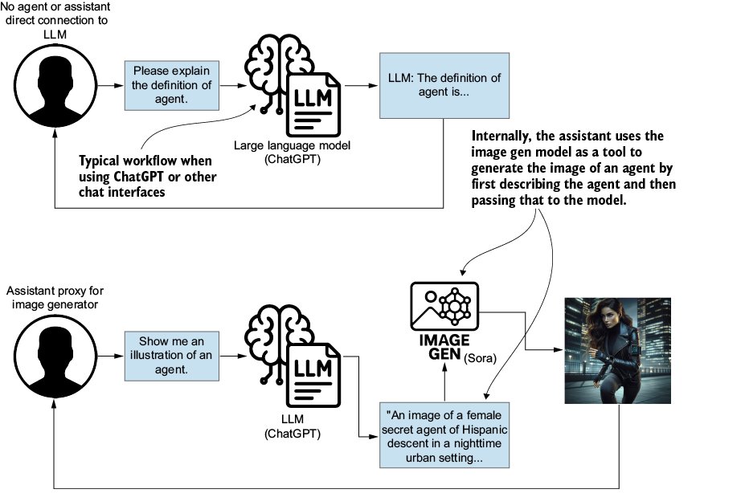
If you have used Nano Banana, Image 2.0, or other image-generation tools through platforms like ChatGPT or Gemini, you have experienced a proxy agent interaction. In this case, an LLM intercepts your requests and reformulates them into a format better suited to the task.
From these two direct communication patterns, we have evolved into tool-using assistants and agents. The terminology in this space is unsettled, and you will see “assistant” and “agent” used interchangeably in many places. For this book, we draw the line along the axis of autonomy. Here, we use the term assistant to refer to an LLM that can use tools on behalf of the user but requires approval at each step and lacks the agency to plan and complete multiple tasks on its own. In contrast, agents can work autonomously to reason, plan, and undertake tasks such as sending emails, creating presentations, booking flights, and performing research.
In practice, the line between assistant and agent is a spectrum rather than a hard boundary. Production agents almost always implement graduated human-in-the-loop controls: low-risk steps run autonomously, medium-risk steps may require confirmation, and high-stakes actions such as sending emails, making purchases, or deleting records are typically gated by explicit approval, regardless of the agent’s overall autonomy level. When we describe agents as autonomous in this book, we mean they can plan and execute multistep work on their own. We do not mean they should run unsupervised in every situation. Designing the right approval and oversight mechanisms is part of building an agent, and we return to it throughout the book.
Table 1.1 summarizes the four interaction patterns we will work with, from direct chat through autonomous agents.
| Pattern |
Approval model |
Autonomy level |
Typical use case |
Example platform |
|---|---|---|---|---|
| Direct LLM chat |
No tools invoked; the model only generates text |
None |
Q&A, drafting, brainstorming, learning |
Original ChatGPT (2022), early Claude (2023) |
| Tool-augmented LLM |
Implicit per call; a user prompt triggers a single tool |
Low |
Image generation, web search, simple lookups |
ChatGPT with DALL·E, Gemini with Google Search |
| Assistant |
Per-task approval; the user confirms each action |
Medium |
Pair programming, cited research, document editing |
GitHub Copilot Chat, Cursor, Claude in Excel |
| Agent |
Goal-level approval with gated high-stakes actions; the user sets the objective, and the agent decides the steps |
High |
Multistep research, repo-wide refactors, browser automation |
Claude Code, OpenAI Operator, Devin |
Figure 1.2 shows a side-by-side comparison of the assistant and agent patterns. The key difference is where the human sits in the loop: the assistant requires per-step approval, while the agent operates against a higher-level goal.
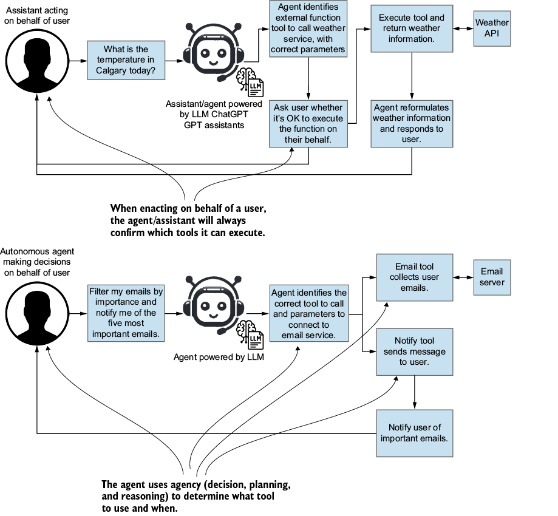
In the figure, the assistant (top) uses a single tool to call the weather service and answer a weather query, but first it asks the user for approval. By contrast, the user gives the agent (bottom) the ability to make decisions, reason, and plan to use tools to complete a higher-level goal. In this scenario, the user empowers the agent to select the appropriate tools for handling emails and notifications so it can identify and display the five most important emails.
If you have ever used a ChatGPT tool such as web search, canvas, or GPT Assistant, then you have used an assistant. In this case, the LLM is aware of the available tools or assistant functions and can prepare to call them. Before calling a new external tool, the LLM pauses and asks for user approval. If approved, the tools are executed and the results are returned to the LLM. The LLM then reformulates the response in natural language and returns it to the user.
In contrast, the agent interprets the user’s request or goal, and may then reason and construct a plan to identify further decision points. From there, it executes the steps in the plan and makes the required decisions independently. It may request user feedback after specific milestone tasks, but this agent has the power and ability to create and execute a plan to complete a goal. Agency empowers agents to accomplish complex goals, but care must be taken to prevent them from performing unknown actions.
We use the term agency to describe an agent’s ability to make decisions and use tools to complete a goal. Internally, this means agents (LLMs) must be able to “reason” through the tasks needed to accomplish that goal. Table 1.2 provides three example goals: creating an image, traveling to Calgary, and buying a computer. It also lists the tasks performed for each goal and the tools used to carry out those tasks.
| Goals |
Tasks |
Tools |
| Create an image |
Create an image |
|
| Travel to Calgary (YYC) |
Search for flights Book flights Book hotels Book transportation |
|
| Buy a computer |
Search for computers Compare features and prices Order a computer |
|
Goals may be as simple as creating an image or as complex as booking travel or buying something. The tasks needed to complete a goal are broken down to the tool level, so each task involves executing a tool. Tools may be designed for specific tasks, such as creating images, or for more general uses, such as web search, which can support multiple tasks. Tool output may then become the input to the next tool call, a process called tool chaining.
Agents receive a goal from the user or system and break it down into tasks. From there, the agent performs each task necessary to achieve the goal. Figure 1.3 illustrates an agent’s typical process for taking a goal from a user and completing tasks using tools. The process has four basic steps: sense, plan, act, and learn.
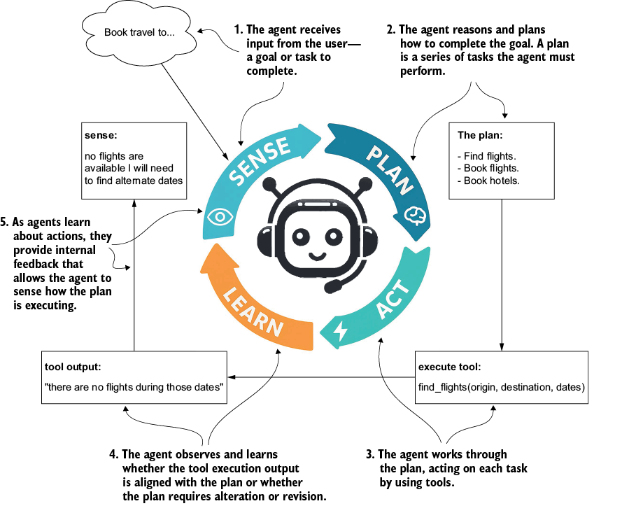
The sense-plan-act-learn (SPAL) cycle is an internal mechanism agents use to complete goals that require multiple task actions. Agency, including the ability to decide and plan powers this loop for agents. This loop is not new. It echoes well-established ideas from classical AI and robotics, including the OODA loop (observe, orient, decide, act) from military strategy; BDI (belief, desire, intention) architectures from agent-based AI research; and the reactive planning and sense-plan-act robotics paradigms that preceded them. We adapt the pattern here for LLM-powered agents, where sense maps to input and context processing, plan to LLM reasoning, act to tool execution, and learn to output evaluation and memory updates.
When configuring an agent, we typically provide it with the tools it needs to act and complete tasks. Then, When the agent is given a goal, it loads its instructions (prompt) and generates a plan internally. This plan specifies which tools to execute and how, along with which tool outputs may need to be chained. Then The agent then observes the results from the task and tools to determine whether the goal is complete, or the process needs to continue. If the goal is complete, the agent returns the results. This is a high-level overview of the process; some or all of these steps may be more complicated in practice.
For earlier foundational LLMs (such as GPT-4), we had to use prompt-engineering techniques to get the model to reason step by step, create a plan, and execute the tasks in that plan. Today, most frontier models used to build agents include some capacity for reasoning and planning, often surfaced explicitly through a thinking or reasoning mode. The quality of that built-in reasoning varies considerably, though. Smaller models, older models, and models pushed outside their training distribution may reason shallowly or skip steps on complex multistep tasks, even when they nominally support a reasoning mode.
Built-in reasoning reduces some of the need to inject reasoning through the instructions provided to the agent, but it does not eliminate that need. As we will see in chapter 4, you may still want to use reasoning patterns to improve, structure, and control agent reasoning, especially when the task is long-horizon or the underlying model is not a frontier reasoner.
OpenAI and ChatGPT established a an early pattern for using LLM tools, and this pattern has been adapted for agents. An LLM or agent must be instructed on how to use tools, including how to define a tool’s inputs and handle its outputs. Tools themselves are extensions of functions, and we often refer to them as tool functions. Figure 1.4 illustrates how an agent can be configured to use and then invoke a tool function.
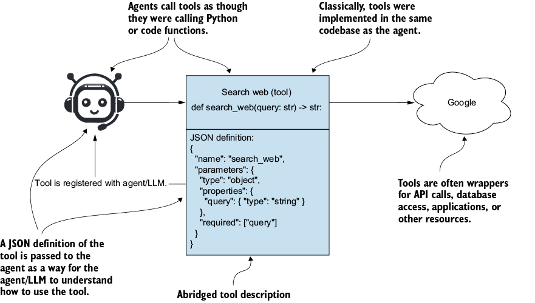
Tools often wrap around API calls, databases, external applications, or other resources. They allow the agent to act outside its own code and interact with external systems. Various agent frameworks let you register a tool by annotating the underlying function, such as with a Python decorator, a TypeScript decorator, or a configuration entry, depending on the framework, so the agent knows how and when to call it.
Tools can also fail, and how an agent handles those failures is part of what separates a demo from a production system. APIs time out, databases return unexpected schemas, rate limits are hit, services go down, and arguments arrive malformed. A well-built agent treats tool failures as part of normal control flow rather than as crashes. It surfaces the error back to the model, lets the agent decide whether to retry, fall back, ask the user, or abandon the task, and limits the number of retries to avoid runaway loops. We will return to error handling, retries, and fallbacks when we build production agents in later chapters.
Traditionally, agents and LLMs were restricted to the tools available within their codebases. This constraint became a problem early on because agent developers often spent more time building tools than developing agents. Consider an agent that needs to read your calendar, send a Slack message, query a Postgres database, and create a Jira ticket. Without a shared protocol, the developer must write and maintain four separate tool wrappers, keep up with four sets of API changes, and reimplement the same authentication, retry, and schema-handling logic each time. Multiply that work across a team building several agents, and most of the engineering time goes into tool plumbing rather than agent behavior.
That has since changed. Protocols such as the Model Context Protocol (MCP) allow agents to interact with tools outside their codebase. Instead of rebuilding each integration in-house, agents can call out to dedicated tool servers maintained by the service provider or the community. The emergence of MCP represents a shift in how agents are built, moving from bespoke tool libraries embedded in each agent’s codebase to a standardized, discoverable ecosystem of external tool servers.
MCP, developed at Anthropic and released in November 2024, is an open standard based on JSON-RPC 2.0. It is designed to let AI systems connect to external services consistently, securely, and efficiently. JSON-RPC 2.0 is a lightweight remote procedure call protocol that defines a standard message format for requests and responses. As a result, MCP tool calls follow a predictable, language-agnostic structure whether the server is written in Python, TypeScript, Go, or another language.
Initially, MCP was promoted as an integration point between LLMs and tools, extending the pattern OpenAI had already established with ChatGPT, as discussed in the previous section. What separated MCP it from earlier work and established it as a pattern for LLMs was a simple, easy-to-adapt protocol that could wrap any codebase into a compact server. MCP fundamentally changes how we build AI systems.
LLM and agent developers could thus use prebuilt MCP servers to easily integrate tools outside their codebases. When a prebuilt server already exists for the service they want to reach, they no longer have to concern themselves with building individual functions to act as tools or with interfaces, databases, and other connections. Instead, they can connect to the MCP server, discover all available tools, and use them seamlessly. When no prebuilt server exists, someone still has to build and maintain one that wraps the underlying capability. But that work happens once per integration rather than once per agent, and the resulting server can be reused or shared with the wider community.
Figure 1.5 illustrates how agent–MCP interaction works in practice, shifting tool development from a per-agent burden to a shared, reusable layer.
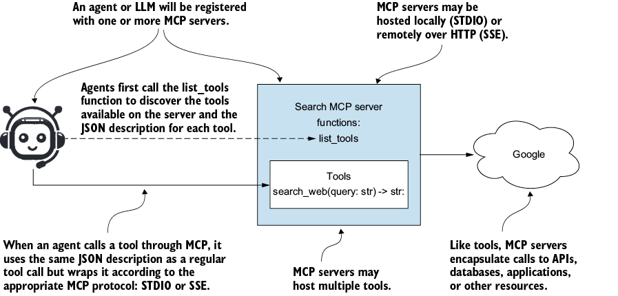
list_tools to find all the tools the server supports, along with their descriptions. Then, as with typical internal tool use, it can determine how best to use each tool tools based on its tool description.Connecting agents to MCP servers typically involves setting up and running the server, then registering it with the agent. From there, when the agent is assigned a task, it first calls list_tools on the server to get a list of available tools and descriptions. Internally, the agent then decides which tool to use, executes it, learns from the result, revises as needed, and collects the final results.
Often referred to as the USB-C for LLMs and agents, MCP is designed to solve many of the problems developers frequently encounter when building LLM and agent applications:
MCP has been a major driver in the adoption of AI agents because it enables seamless integration with a wide range of tools and resources. In chapter 3, we examine MCP extensively, from building servers to consuming them with agents. Tools and MCP servers are just one aspect of building agents. In the next section, we examine the fundamental layers that make up agents.
Agents can range from elementary entities used to complete simple tasks and goals to more complex entities capable of undertaking challenging, multistep goals. Adding functionality to an agent and enhancing its capabilities can be thought of as adding functional layers. The five primary functional layers of an agent are persona, tools and actions, reasoning and planning, knowledge and memory, and evaluation and feedback. These layers, shown in figure 1.6, will serve as the organizing principle for the first half of the book as we build our own agents.
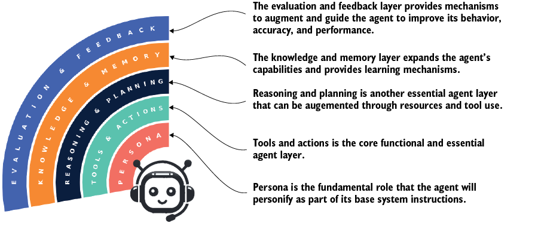
Each of these layers represents a progression in an agent’s capabilities. Not all agents require or benefit from every layers, and in some cases, specific layers may be omitted. In most cases, though, the core layers (persona, tools and actions, and reasoning and planning) are essential to all agents. It is also worth noting that these layers are not invoked in a fixed, top-to-bottom sequence. The core components interact continuously throughout the agentic loop: reasoning consults the persona to shape its choices, planning calls tools, tool results feed back into reasoning, and the persona constrains how the agent communicates the result. The layered diagram organizes capabilities on the page; it does not define a runtime call order.
We will examine each of these layers in more detail in the following sections. As we progress through the book, we will explore each layer in greater depth in later chapters.
The agent persona represents the base description and role. The persona, often referred to as the system prompt, guides an agent in completing tasks, learning how to respond, and understanding other nuances. It includes elements such as background or role (e.g., coder, writer) and may include contextual attributes such as expertise level, communication style, domain focus, and operating constraints. Personas can be generated through several methods, including handcrafting by a developer; LLM-assisted drafting, where one model writes or refines the persona for another; and data-driven techniques such as evolutionary algorithms. In research settings, evolutionary algorithms have been used to iteratively mutate and select agent personas based on performance metrics, effectively optimizing the persona through automated trial and error. Figure 1.7 shows the persona layer as the first layer of an agent.
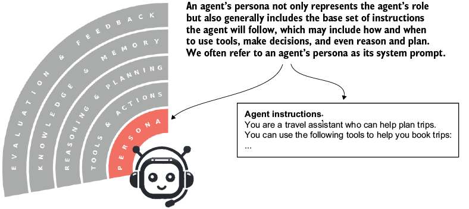
We will explore how to create effective, specific agent personas through techniques such as prompt engineering, reasoning and planning, and rubrics and grounding. We will also learn the differences between human-formulated and AI-formulated (LLM) personas.
The next essential layer for almost all agents is tools and actions. Tools help agents complete tasks toward an end goal and support activities in the higher layers of reasoning and planning, knowledge and memory, and evaluation and feedback. Figure 1.8 illustrates the tools and actions layer and its role in empowering an agent.
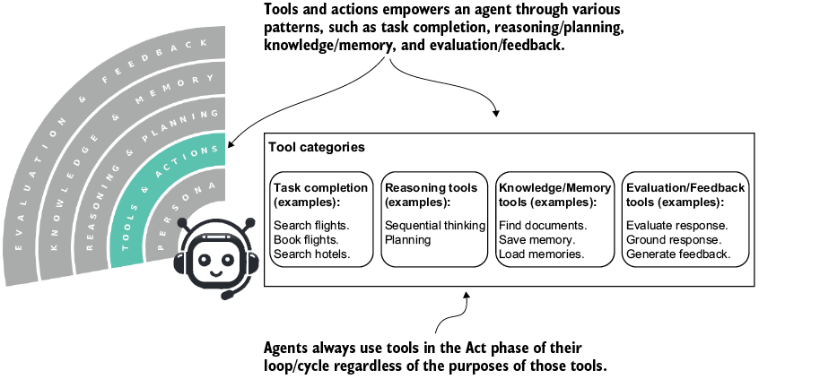
Tools & actions can be categorized into task completion, context retrieval, reasoning and planning, knowledge and memory, and feedback and evaluation, with varying levels of influence on the agent’s environment and internal states. Context retrieval tools fetch information the agent needs to ground its next decision, such as running a search, querying a vector store, reading a file, or calling a read-only API, without changing any external state. They are distinct from knowledge and memory tools, which read from and write to the agent’s own persistent stores, and from task completion tools, which take actions in the world. Tool use within an agent can be driven by planning, memory recollection, and evaluation and feedback mechanisms that shape the agent’s behavior and support learning.
Agents that use tools or execute actions need to be able to reason and plan. Current foundational models can often reason effectively on their own and provide reasoning traces. For most general applications, that built-in reasoning is enough. For more demanding agents, though, we want more control over how the agent reasons, including what it considers, in what order, and with what guardrails.
A useful line of reasoning for deciding when model-native reasoning is sufficient versus when to layer on structured reasoning patterns follows:
Figure 1.9 illustrates the reasoning and planning layer and its role in controlling agents’ thought and planning processes. We cover specific reasoning patterns, including chain-of-thought, ReAct, Reflexion, and others, in chapter 5.
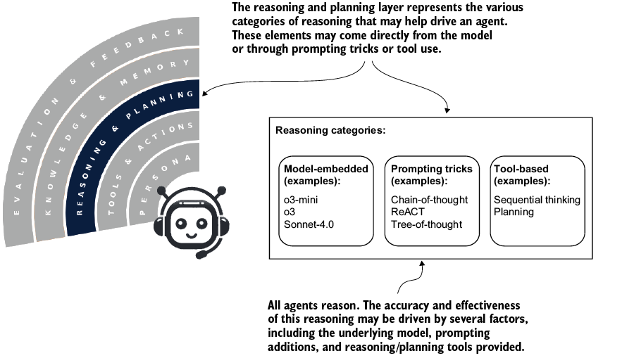
Within planning, agents may use either single-path or multipath reasoning. In single-path reasoning, the agent commits to one plan and works through each step in sequence without revisiting earlier decisions, even if a step fails or yields surprising results. This approach is fast and cheap but fragile when the task is uncertain. In multipath reasoning, the agent explores several candidate strategies in parallel or in sequence, evaluates them against the goal, and selects the most promising branch. It may also save efficient paths for future reuse. Tree-of-thought is a well-known example of this pattern. Multipath reasoning can produce better plans for hard tasks, but it incurs higher token and latency costs because the agent effectively plans several times before acting.
External planners are separate systems, such as orchestration code, a workflow engine, or a dedicated planning agent, that coordinate the sequencing of an agent’s steps. In this arrangement, the planning logic lives outside the executing agent, which receives the next step to perform. Later chapters look at when to push planning out to an external system.
In addition to developing essential skills for effective agent task execution and goal achievement, we will gain a clear understanding of fundamental planning approaches. We will also explore reasoning strategies, from single-path to multipath reasoning, that help optimize planning processes and consider multiple paths for efficient task completion.
Agents use knowledge and memory to annotate context with the most pertinent information while limiting the number of tokens. Knowledge and memory structures can be unified, with both subsets following a single structure, or hybrid, involving a mix of different retrieval forms. Formats vary widely, from source documents (such as PDFs) to relational, object, or document databases; graph databases; keyword search indexes; dense embeddings that enable semantic similarity search through vector representations; and even simple lists that serve as agent memories.
The most common form of memory in practice is conversational memory: the running record of what the user and the agent have said to each other, along with the tools the agent has called along the way. Conversational memory is typically split into short-term memory and long term memory. Short-term memory holds the recent turns of the current session and lives directly in the model’s context window. Long-term memory persists across sessions and is retrieved selectively when relevant. Most production agents use both, layering long-term memory of user preferences, prior decisions, and ongoing projects on top of the short-term, turn-by-turn history.
All of this is shaped by one hard constraint: the context window, the maximum number of tokens the model can attend to at once. Context window management is one of the most consequential architectural decisions in agent design. It governs how much conversation history you can keep before summarizing or evicting older turns, how much of a tool’s output you can feed back to the model instead of filtering or chunking it, how knowledge retrieval results are ranked and trimmed before insertion, and how multiple agents share state when coordinating on a task. Models with larger windows ease these pressures but do not eliminate them. Longer contexts cost more, slow inference, and can degrade reasoning quality past a certain length, so deciding what not to put in the window is as much a part of memory design as deciding what to retrieve. We return to memory architectures and context strategies in detail in later chapters.
Knowledge and memory serve related but distinct functions in an agent. Knowledge is the static, external information the agent draws on to do its work, such as documents, manuals, knowledge base articles, schemas, code repositories, and other reference material that exists independently of any conversation. It is curated and updated on the timescale of the underlying source, such as when a new policy is published or a manual is revised, and is typically the same for every user of the agent.
Memory, in contrast, is the dynamic, experiential information the agent builds through interaction. It may come from the running conversation, the user’s stated preferences, decisions made in past sessions, or observations the agent has recorded about its own behavior. Memory is updated continuously during use and is typically scoped to a specific user, tenant, or session. The two are usually stored and retrieved differently as well: knowledge tends to live in vector stores, search indexes, or graph databases optimized for breadth and recall, while memory tends to live in session stores, key-value caches, or per-user databases optimized for recency and relevance to the current actor.
Both knowledge and memory are surfaced to the agent through a well-established pattern called retrieval-augmented generation (RAG). With RAG, an agent retrieves the most pertinent information from these sources at decision time and augments its context with that information. RAG was originally formulated for static knowledge retrieval, but the same retrieve-then-generate pattern now underpins memory systems, hybrid knowledge-and-memory stacks, and tool-mediated lookups across both. Figure 1.10 highlights the role of the knowledge and memory layer within agents.
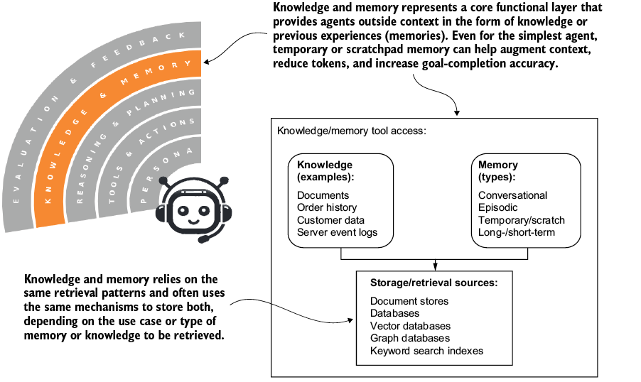
We will learn how to optimize information management within agents. We will explore semantic embedding structures and how they can adapt to the specific needs of agents, whether unified or hybrid. We will also use diverse data sources for knowledge, ranging from language-based documents to different database types, and semantic similarity matching of word and document embeddings. Finally, we will examine how hybrid structures can improve both memory and knowledge retrieval in agents.
The evaluation and feedback layer represents external mechanisms that help agents provide more robust and accurate responses. A common implementation is the LLM-as-judge pattern, where a separate model scores or critiques the agent’s output against a rubric before returning it to the user. Internally, agents use evaluation and feedback during the learn phase of the agent process loop. In this phase, an agent assesses the results of an action or tool and generates internal feedback to continue or modify a goal-execution plan. Figure 1.11 illustrates how evaluation and feedback can be implemented as a final hardening layer for agents.
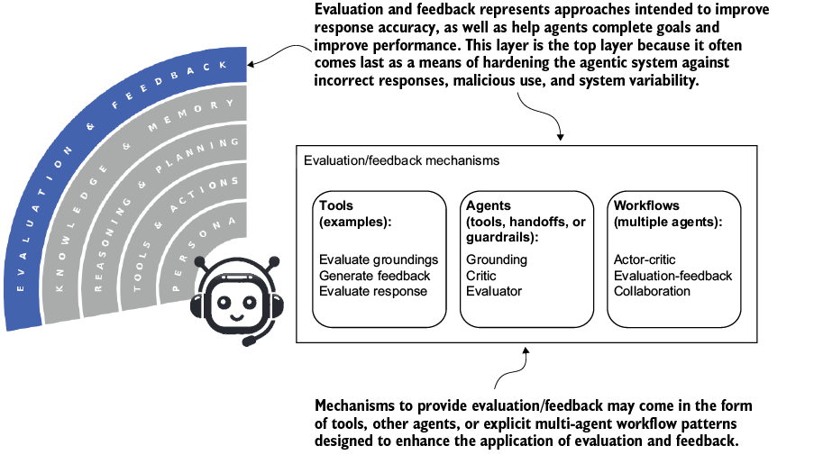
The mechanisms we employ for evaluation and feedback within an agent system vary depending on the use case and desired solutions. These mechanisms may take the form of tools that an agent can call on, other agents acting as tools or handoffs, guardrails on inputs and outputs, or a dedicated critic (sometimes called an evaluator) running alongside the primary agent in an actor-critic arrangement. In this arrangement, the actor produces a candidate response or plan and the critic scores or revises it before the agent commits. There are even explicit agent workflow forms that encourage evaluation and feedback, as we will see in the next section.
Individual agents can perform many tasks to achieve multiple goals. But single-agent systems run into limits as problems grow in scale and scope, and multi-agent systems exist for several distinct reasons:
Multi-agent systems extend agents’ power and capability, helping automate and solve problems that single agents cannot. In the next section, we begin to exploring the first and most common pattern for connecting agents.
Multiple agents can be configured to work together in several ways. The collaboration pattern you choose for depends on your use case. Figure 1.12 shows the agent flow (assembly line) pattern for building a multi-agent system.
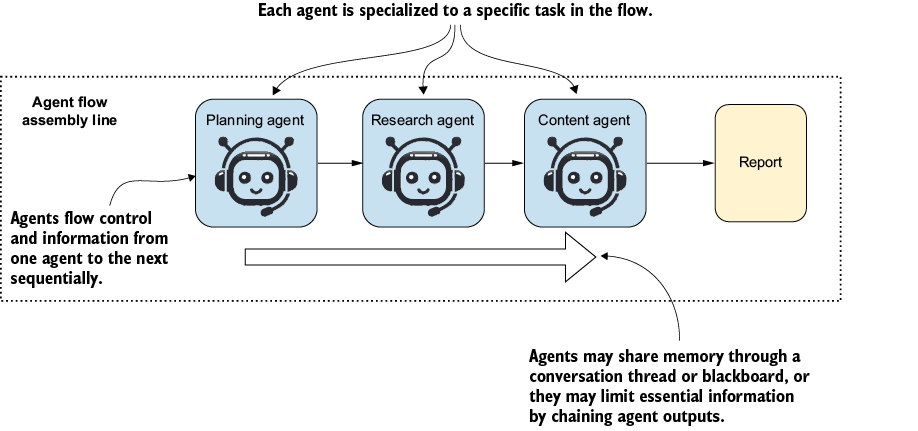
In the agent flow pattern, agents are arranged like an assembly line. Each agent represents a specialized worker with unique access to tools and resources. Agents coordinate in one of three ways:
The right choice depends on how much shared context the downstream agents actually need. More context is not always better, and the assembly line form is often the right default until you see evidence that agents need to look further upstream.
The agent flow pattern is the simplest to implement and control. It is often used to automate well-defined, multistep tasks with designated roles. Single-agent systems that struggle to complete a chain of work are ideal candidates for the agent flow pattern.
Agent orchestrations, often called hub-and-spoke, are a good upgrade when a single agent becomes overloaded or needs to handle multiple goals. These agents are usually interactive and may resemble assistants. Figure 1.13 shows a typical agent orchestration pattern for handling numerous goals.
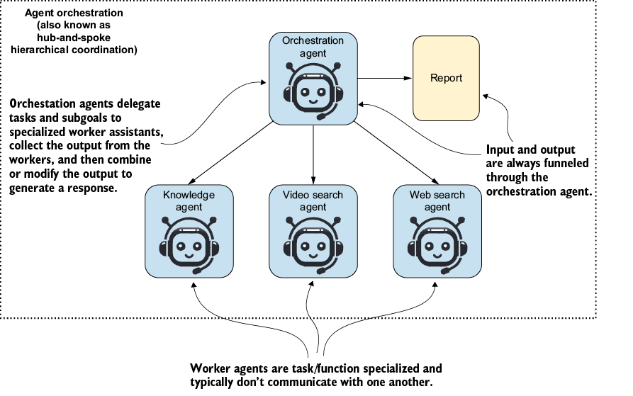
In the orchestration agent pattern, the primary agent is often responsible for planning and coordinating with the other agents. The orchestrator delegates tasks to specialized worker agents, much like using tools. Each specialized agent may perform multiple tasks to complete subgoals and, internally, may also perform planning as required.
The benefit of this pattern is that you can control all input and output through a single agent. It is also easy to transform a single agent that uses tools into an orchestrator that uses worker agents as tools. Each worker agent, in turn, specializes in a set of tools.
A drawback of this pattern is that worker agents are often tightly restricted and cannot provide feedback, evaluation, or other forms of collaboration. Some variations employ agents as observers and critics, but these agents are still limited to communication through delegation. As we will see in the next section, agent collaboration is a powerful counterpart that can overcome these limitations.
Early approaches to building multi-agent systems used the concept of an agent team. Each agent took on a role within the team and helped solve a complex problem. Figure 1.14 shows an example of a collaborative multi-agent team.
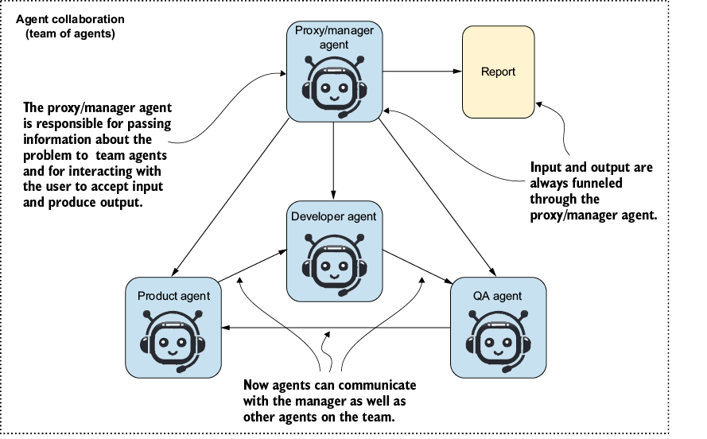
In the collaboration pattern, agents typically communicate with each other or with a set of specific counterpart agents. As in the previous patterns, each agent role has access to a particular set of tools for working within that role. Unlike in previous patterns, agents not only use tools but within their roles may also have a specific function within the team.
Within the figure’s example team, the QA agent may validate that the code works according to the product’s requirements. It may also go further and critique the code’s structure and other factors. Likewise, the product agent may build requirements while also validating that requirements have been completed to specification.
The benefit of building collaboration agent systems is that they can solve very complex tasks over time and are relatively easy to envision. But the disadvantage is that such systems are chatty and repetitive, making them much less efficient at achieving goals and potentially overly costly. Cost is worth flagging as a first-class concern more broadly: every pattern in this section trades latency, token spend, and operational complexity against capability. The right pattern for a given problem is usually the cheapest one that meets the requirement, not the most powerful. We return to cost and efficiency tradeoffs when we evaluate patterns in production later in the book.
We typically use this pattern only when solving complex problems that would not otherwise be solvable. Agent collaboration has been shown to generate new thoughts and ideas. Advanced patterns of collaborative agents have even used evolutionary algorithms to further extend the ability to create new concepts.
You can also mix and match these patterns to create complex multi-agent systems. This book focuses primarily on the OpenAI Agents SDK, which handles agent flow and agent orchestration patterns well.
The journey ahead is organized around the five agent layers: persona, tools and actions, reasoning and planning, knowledge and memory, and evaluation and feedback. We use these five layers to understand, build, and design every agent we work on in the book. Each layer gets its own dedicated chapter with code you can run and modify.
Before we work through the layers in depth, we cover two topics essential to modern agent development: the Model Context Protocol (MCP) and multi-agent systems. MCP changed how agents connect to tools and data, and multi-agent coordination is now expected for anything beyond a toy demo. Introducing these topics early lets the layer chapters build on a realistic foundation rather than a stripped-down sandbox.
Once you have the five layers under your belt, we move from single agents to multi-agent systems and real-world distributed agentic systems. This is where individual agents become coordinated infrastructure: how messages flow between agents, how state is managed across processes, and how failures are handled.
From there, we move into more advanced territory. We dig into the agentic loop, the mechanism that powers deep research agents and any system that needs to plan, act, observe, and revise over long horizons. We then explore next-generation agentic systems that add a metacognitive layer for internal self-improvement: agents that monitor and correct their own reasoning rather than relying purely on the underlying model.
The final chapter brings everything together by walking through common, real-world production agent systems: a customer support (help desk) agent, a deep research agent, and a RAG agent. By then, you will have the vocabulary and pattern recognition to read each system as a specific configuration of layers, loops, and coordination strategies you have already built yourself.
As noted, this book is not a production operations manual, so we touch only briefly on enterprise-level decisions about security, governance, compliance, and scaling. After learning to build agents here, readers interested in production-grade systems may want to look at current resources, videos, and blogs, which they can find through their favorite AI-powered search engine.